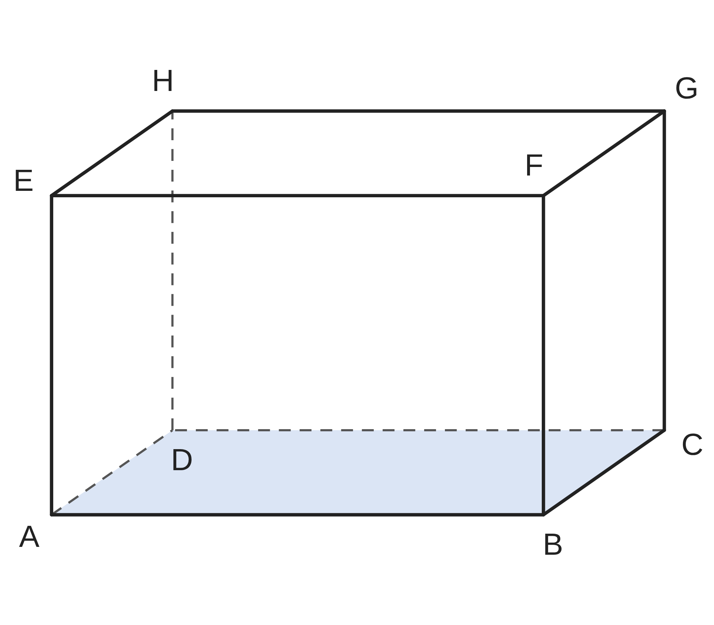
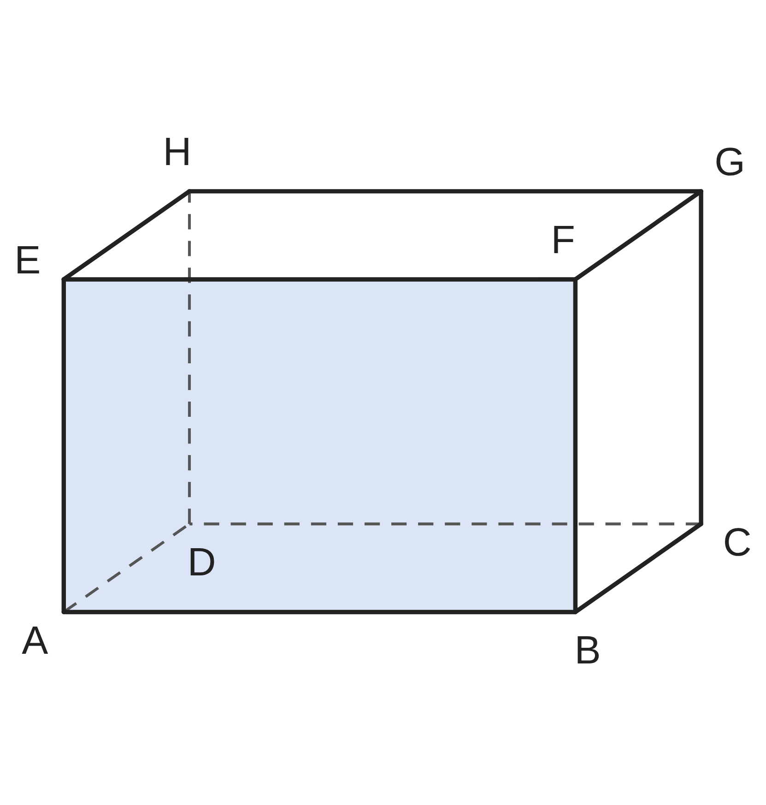

ペア学習
第4時 直線と平面、平面と平面の位置関係を調べよう
第3時の重要語句から、1人1問ずつ、言葉を選んで出題する。
聞かれた人は、その言葉の意味を、自分の言葉で言う。
交わる
平行
ねじれの位置
平面
垂直に交わる
空間図形 第4時 直線と平面、平面と平面の位置関係を調べよう
めあて
第4時 直線と平面、平面と平面の位置関係を調べよう
学習課題
直方体で、面 ABCD と、
12本の辺との関係を調べて、
仲間分けしよう。

【自分の仲間分け】を書いて、【ペアと交換】しよう。
空間図形 第4時 直線と平面、平面と平面の位置関係を調べよう
学習課題のまとめ
第4時 直線と平面、平面と平面の位置関係を調べよう
直方体で、面 ABCD と、12本の辺との関係を調べて、仲間分けしよう。
（例）自分の仲間分け
面の上にある … AB、BC、CD、DA
1点で交わる … AE、BF、CG、DH
交わらない … EF、FG、GH、HE
空間図形 第4時 直線と平面、平面と平面の位置関係を調べよう
ことば
第4時 直線と平面、平面と平面の位置関係を調べよう
直線と平面 … 直線が平面上に ・1点で ・ である
2つの平面 … ・ である
直線 ℓ が平面 P と点 O で交わり、
O を通る P 上のすべての直線と垂直なとき、
ℓ と P は であるといい、ℓ⊥P と書く。
点 A から平面 P にひいた と P との交点を H とするとき、
線分 AH の長さを、A と P との という。
空間図形 第4時 直線と平面、平面と平面の位置関係を調べよう
ことば
第4時 直線と平面、平面と平面の位置関係を調べよう
直線と平面 … 直線が平面上にある・1点で交わる・平行である
2つの平面 … 交わる・平行である
直線 ℓ が平面 P と点 O で交わり、
O を通る P 上のすべての直線と垂直なとき、
ℓ と P は垂直であるといい、ℓ⊥P と書く。
点 A から平面 P にひいた垂線と P との交点を H とするとき、
線分 AH の長さを、A と P とのきょりという。
空間図形 第4時 直線と平面、平面と平面の位置関係を調べよう
例題
第4時 直線と平面、平面と平面の位置関係を調べよう
直方体で、AB＝ cm、AD＝ cm、
AE＝ cm とする。
（1）面 ABFE と平行な辺
（2）面 ABFE と垂直な辺
（3）面 ABFE と平行な面
（4）点 D と面 ABFE とのきょり

【きょりのまとめ】点と平面のきょり、平行な2つの面のきょりは、どこの長さか。
空間図形 第4時 直線と平面、平面と平面の位置関係を調べよう
例題 解答
第4時 直線と平面、平面と平面の位置関係を調べよう
直方体で、AB＝4cm、AD＝3cm、AE＝2cm とする。
（1）DC、CG、GH、HD
（2）AD、BC、EH、FG
（3）面 DCGH
（4）3cm（辺 AD の長さ）
きょりのまとめ
点と平面のきょりは、点から平面にひいた垂線の長さ。
（例）点 D と面 ABFE … 辺 AD は、面 ABFE に垂直。
平行な2つの面のきょりは、
一方の面上の点から、もう一方の面にひいた垂線の長さ。
空間図形 第4時 直線と平面、平面と平面の位置関係を調べよう
考えよう
第4時 直線と平面、平面と平面の位置関係を調べよう
①
まず、予想しよう。何本の直線と垂直であればよいと思うか。
理由もひとこと書こう。
②
三角定規と下じきで、予想を確かめよう。わかったことを書こう。
③
ℓ⊥P を確かめるには、P 上の何本の直線と垂直であることを
調べればよいか。理由も説明しよう。
立ち歩いて、教え合おう。三角定規は教卓から取ろう。ゴールは、考えようを、全員が説明できること。
空間図形 第4時 直線と平面、平面と平面の位置関係を調べよう
振り返り
第4時 直線と平面、平面と平面の位置関係を調べよう
今日のめあて
平面上にある
交わる
平行
垂直
垂線
きょり
今日わかったことを、ペアで1つずつ言い合おう。
ワークシートと演習プリントを出そう。（未完成でも出す）
空間図形 第4時 直線と平面、平面と平面の位置関係を調べよう